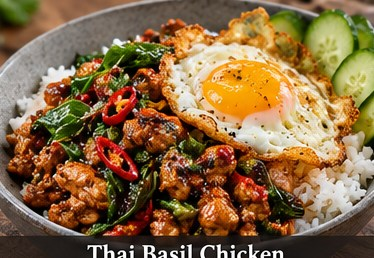

Thai · Dinner · Serves: 4 Time: 30 minutes
Thai Basil Chicken Rice Bowls + Crispy Eggs

Ingredients
- 2 lb Ground chicken
- 1 1/2 cups dry Jasmine rice
- 4 Eggs
- 1, thinly sliced Bell pepper
- 4, sliced; whites/greens Green onions separated
- 5 cloves, minced Garlic
- 1/3 cup, cut in 1-inch Garlic chives pieces
- 1 packed cup Thai basil leaves
- 2 Tbsp + more for eggs Neutral oil
- 3 Tbsp Oyster sauce
- 2 Tbsp Fish sauce
- 2 Tbsp Soy sauce
- 2 tsp Brown sugar
- 3 Tbsp Water
- optional at table Thai chile/chile crisp
Instructions
- Cook the jasmine rice according to the package. Keep warm.
- Whisk oyster sauce, fish sauce, soy sauce, brown sugar and water together.
- Heat a large wok or skillet over high heat. Add 1 Tbsp oil, then half the chicken. Spread it out and let it brown before breaking it into coarse pieces. Remove and repeat with the remaining chicken.
- Add the remaining 1 Tbsp oil, bell pepper, scallion whites and garlic. Stir-fry 60-90 seconds. Add garlic chives.
- Return all chicken to the pan. Pour in the sauce and toss over high heat for 2-3 minutes until glossy and the chicken is fully cooked.
- Turn off the heat and fold in Thai basil and scallion greens just until wilted.
- Fry four eggs until the whites have crisp edges and yolks are cooked to preference. Serve chicken over rice with an egg on each bowl.